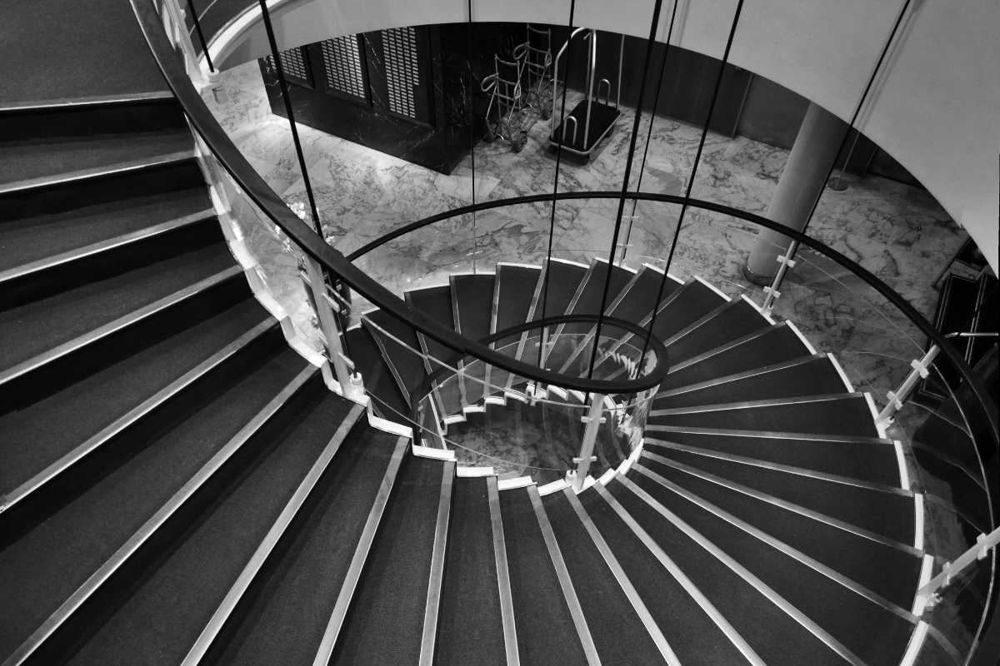
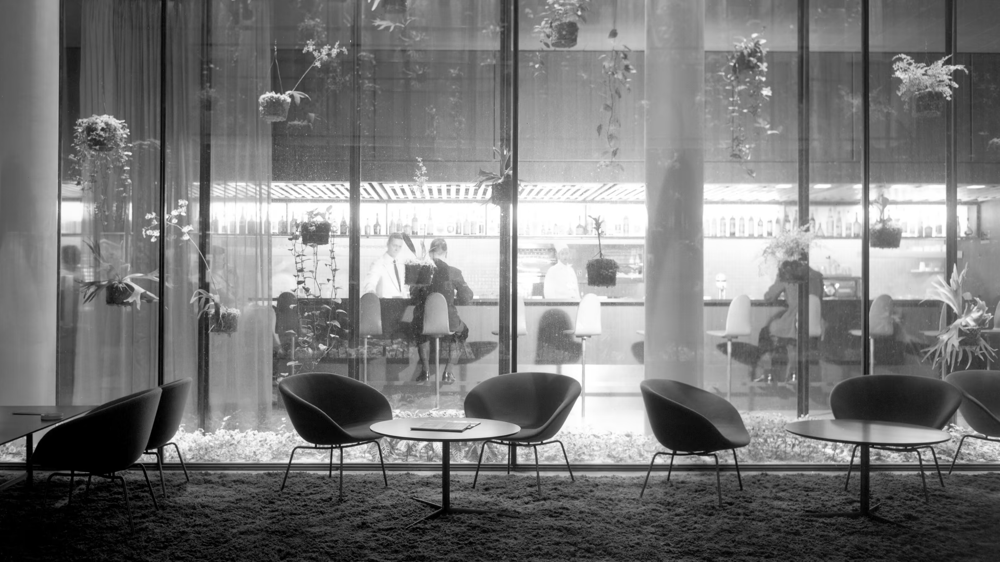
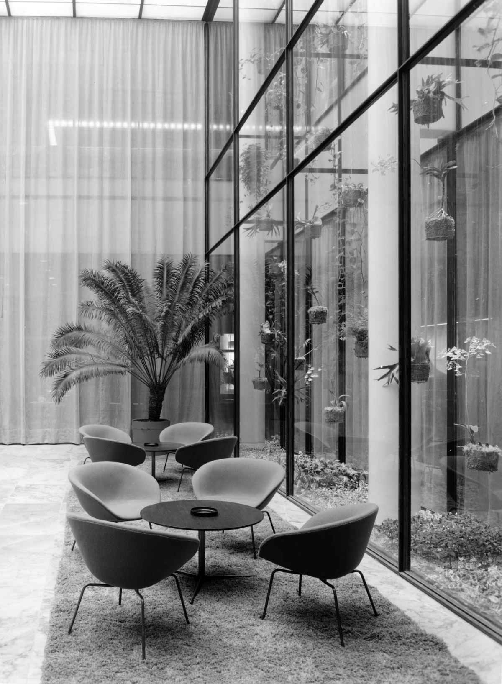

코펜하겐에 위치한 SAS 로얄 호텔은 1956년 건설에 착수했고, 4년 후 그 당시 북유럽 지역에서 가장 높은 건물이자 스칸디나비아에서 가장 큰 호텔로 개장을 앞두고 있었다. 22층 높이의 SAS 로얄 호텔은 1950년대를 정의하는 "제트 시대의 랜드마크"로 불렸다. 아르네 야콥센은 스칸디나비아에서 가장 모던한 호텔을 완성하기 위해 전반적인 디자인 측면에서는 물론 개별 오브제까지 기능과 소재 선택에 특히 주의를 기울였고, 그 결과 오늘날까지도 많은 이들의 사랑을 받고 있다.
fritz hansen web site
editor: fritz hansen
photo: SAS Royal Hotel Copenhagen - Dampa / fritz hansen

곡선형의 계단은 Swan™의 유기적인 형태와 함께 호텔의 깔끔한 라인, 심플한 구조와 강렬한 대비를 이룬다. 계단의 가벼운 구조는 그 당시 가능했던 최고 수준의 기술을 사용했다고 볼 수 있다.
fritz hansen web site
editor: fritz hansen
photo: seier+seier

완벽을 추구하는 건축 철학
현재 SAS 로얄 호텔(래디슨 컬렉션 로얄 코펜하겐으로 명칭 변경)은 모던한 디자인을 선보여온 덴마크 출신 건축가 아르네 야콥센의 대표작이다. 아르네 야콥센이 모든 디테일까지 디자인한 호텔로 전 세계에 알려져 있으며, 코펜하겐에서 가장 조화롭고 모던 디자인 분야에서 가장 이상적인 고층 건물이다. 건물의 비율에서 인테리어 디자인에 이르기까지 호텔 곳곳에 아르네 야콥센이 지닌 예술적 재능이 반영되어 있다. 아르네 야콥센은 심플하고 효과적인 건축적 기능주의의 영향을 받아 디자인적 모든 요소에 완벽함을 추구하는 건축 철학을 가지고 있었고, 이로 인해 그의 작품에서는 특유의 간결한 아름다움을 엿볼 수 있다.
fritz hansen web site
editor: fritz hansen
photo: Radisson Collection Royal Hotel - Fritz hansen

당대 최고 수준의 디자인
‘도심 속 정원’이란 콘셉트에 어울리는 유기적인 디자인으로 호텔 로비, 리셉션, 객실, 레스토랑을 디자인하면서 각 장소에 놓을 의자와 소파, 조명부터 레스토랑의 커틀러리 세트, 심지어 기념품 가게의 재떨이, 공항버스 외관까지 그의 손길이 닿지 않은 영역이 없었다. 놀라운 점은, 이렇게 광범위한 범위로 진행한 작업의 퀄리티가 장소적 맥락을 거세하고 독립적으로 보아도 대니시 모던 디자인이 도달할 수 있는 당대 최고 수준이었다는 것이다.
[전종현의 LUXURY] 감투왕 야콥센의 총체예술
editor: 전종현
photo: fritz hansen